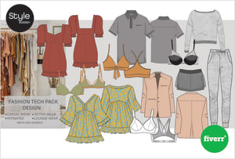
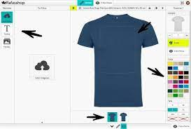
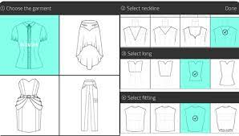
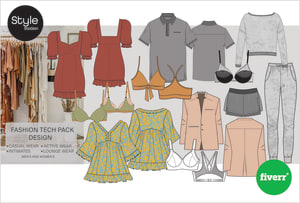
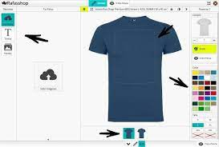
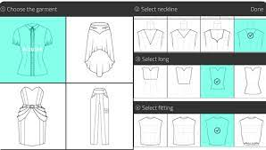

¡Bienvenido al emocionante mundo del diseño de moda! Aquí aprenderás los principios básicos del diseño de ropa y cómo aplicarlos en tus creaciones. Desde la selección de telas hasta la creación de patrones y la confección de prendas, este tutorial te guiará a través de los fundamentos esenciales para convertirte en un diseñador de moda talentoso.
Diseño de Moda y Creación de Colecciones:
Los diseñadores de moda crean prendas de vestir, accesorios y calzado que reflejan las tendencias actuales y el estilo de la marca. Utilizan software de diseño como Adobe Illustrator o CorelDRAW para crear bocetos y diseños digitales. Los diseñadores también pueden utilizar herramientas de diseño en 3D para visualizar cómo se verán las prendas en el mundo real antes de producirlas.
Venta en linea
Las marcas de moda suelen vender sus productos a través de sus propias tiendas en línea, en plataformas de comercio electrónico como Shopify, Magento o WooCommerce, o en mercados en línea como Amazon o eBay. La venta en línea permite a las marcas llegar a un público global y ofrece una experiencia de compra conveniente para los clientes.
Marketing y promocion
Las marcas de moda suelen vender sus productos a través de sus propias tiendas en línea, en plataformas de comercio electrónico como Shopify, Magento o WooCommerce, o en mercados en línea como Amazon o eBay. La venta en línea permite a las marcas llegar a un público global y ofrece una experiencia de compra conveniente para los clientes.
Logistica y envio
La logística y el envío son aspectos clave del diseño de ropa online. Las marcas deben asegurarse de tener sistemas eficientes para procesar pedidos, empacar productos y enviarlos a los clientes de manera oportuna. Algunas marcas utilizan servicios de cumplimiento de pedidos para gestionar estos procesos de manera más efectiva.
Servicio al publico y retorno de productos
La logística y el envío son aspectos clave del diseño de ropa online. Las marcas deben asegurarse de tener sistemas eficientes para procesar pedidos, empacar productos y enviarlos a los clientes de manera oportuna. Algunas marcas utilizan servicios de cumplimiento de pedidos para gestionar estos procesos de manera más efectiva.
Volver al Inicio